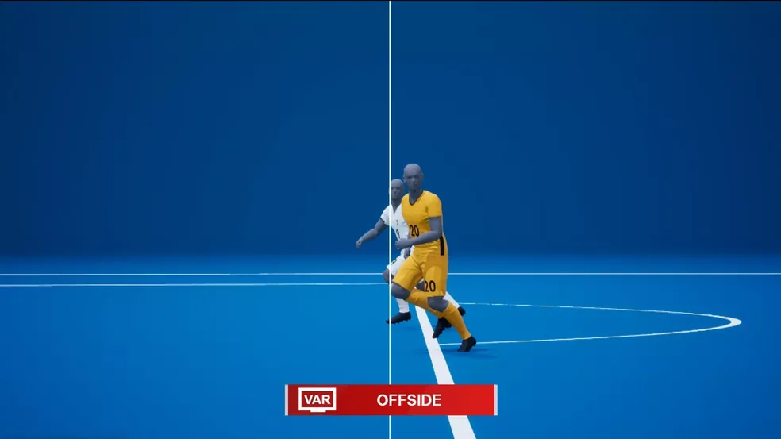

Tecno
Sports

Os wearables esportivos atuais integram Inteligência Artificial, métricas avançadas de recuperação e biometria detalhada. A série Garmin Forerunner e o Galaxy Ring, que auxiliam os atletas a otimizarem seus treinos.
O impedimento semiautomático utiliza câmeras de rastreamento, inteligência artificial e dados da bola para acompanhar a posição dos jogadores em tempo real. No momento do passe, o sistema identifica automaticamente possíveis impedimentos e envia um alerta à equipe do VAR, que verifica a jogada antes de informar o árbitro. A tecnologia já é utilizada oficialmente em grandes competições.

O tira-teima é um recurso tecnológico tradicional utilizado para analisar e ilustrar lances do futebol com maior precisão. Por meio de imagens e virtualizações, permite analisar situações como impedimentos, gols e a distância ou velocidade da bola. Atualmente, seu uso pelos narradores diminuiu devido à evolução de outras ferramentas de análise, sendo utilizado principalmente como recurso ilustrativo pelas transmissões.

O colete GPS é um dispositivo utilizado para monitorar o desempenho dos atletas durante treinamentos e competições. Por meio de sensores, registra dados como distância percorrida, velocidade, aceleração e posicionamento, auxiliando na análise do desempenho e no planejamento dos treinos. A tecnologia já é amplamente utilizada no futebol profissional.
 TECNOSPORT
TECNOSPORT


 PT
PT
 EN
EN
 ES
ES